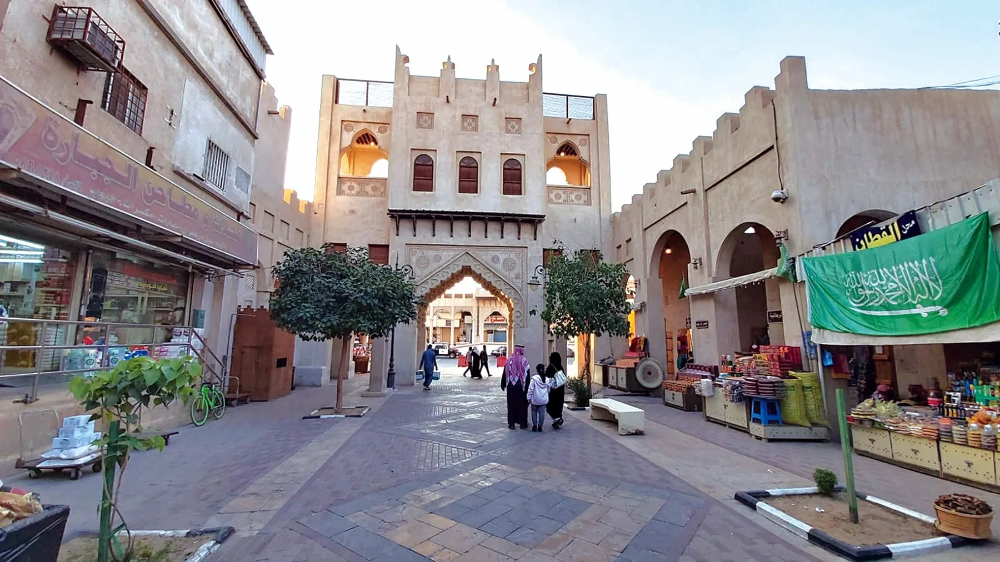

الأحساء
الأحساء: واحة النخيل والعطاء

مرحبًا بكم في هذه الصفحة الإخبارية التي تستعرض جمال مدينة الأحساء وتاريخها العريق.
خبر رئيسي
تشهد الأحساء تطورًا ملحوظًا في قطاع السياحة، حيث تم تطوير العديد من المواقع التاريخية مثل جبل القارة وسوق القيصرية لاستقبال الزوار من داخل وخارج المملكة.
تُعدّ الأحساء واحدة من أعرق مدن المملكة العربية السعودية، وتتميز بواحتها الكبيرة التي تضم ملايين أشجار النخيل.

كما تضم العديد من المعالم التاريخية والثقافية التي تعكس حضارة المنطقة.
أهم الأخبار
| عنوان الخبر | الوصف |
|---|---|
| تطوير السياحة | تحسين المواقع التراثية لاستقبال الزوار |
| مهرجان التمور | فعالية سنوية لعرض منتجات النخيل |